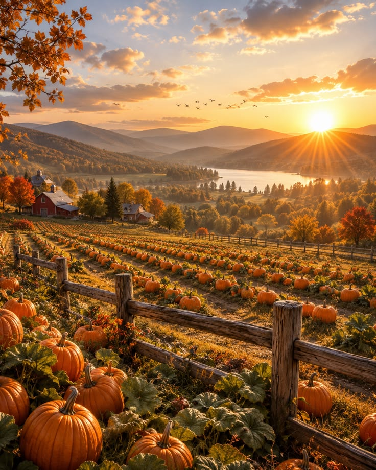
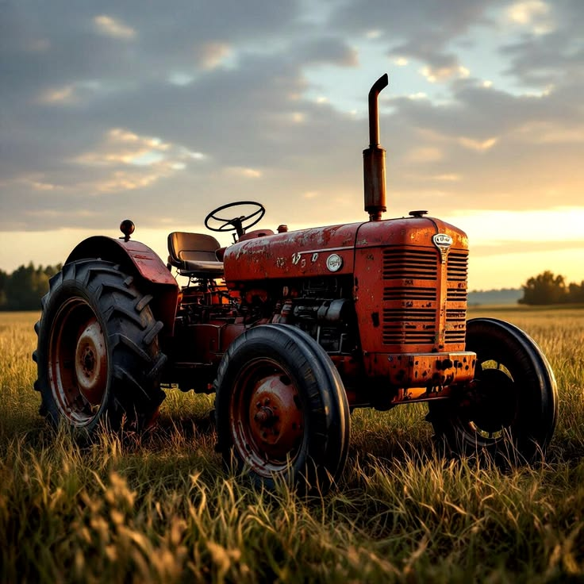
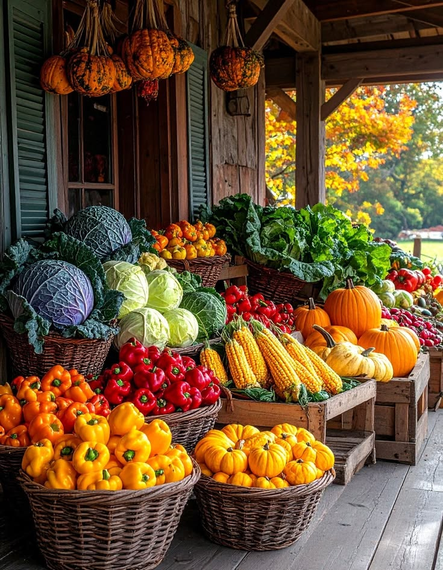
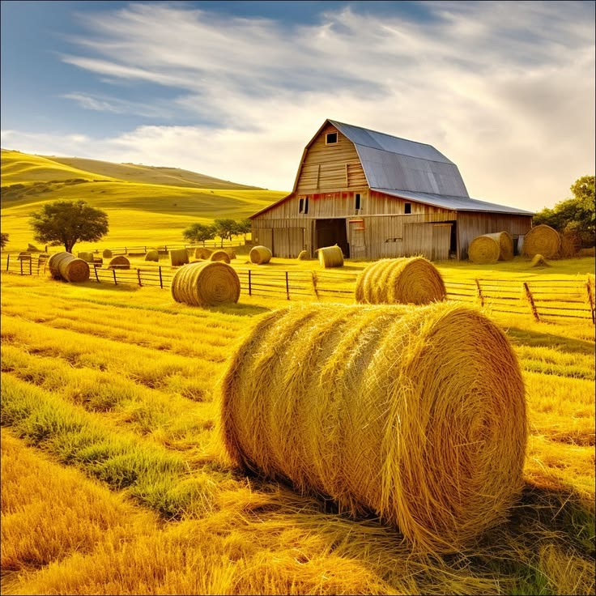

Rooted in the Soil: 32 Years of Autumn Tradition
Founded in 1994 by the Miller family, our farm began as an eight-acre patch with a single tractor and a roadside wooden wagon. Today, we nurture 45 acres of heirloom pumpkins while preserving the authentic rhythm of countryside agriculture.
The Three Pillars of Our Soil
Every seed planted and event hosted is guided by deep respect for the land, our guests, and future generations.
Regenerative Cultivation
We utilize organic winter cover crops, natural compost teas, and zero synthetic pesticides to maintain vibrant, living soil health across our 45 acres.
Agricultural Education
Each season, over 8,000 schoolchildren visit our living classroom to study bee pollination, heirloom pumpkin biology, and regenerative farm cycles.
Zero-Waste Harvesting
Unpicked carving pumpkins never go to waste; they feed local rescued livestock, supply seed conservation banks, and compost back into springtime soil.
A Day in the Life on the Farm
Experience the unhurried textures and quiet beauty of our working autumn homestead.

Dawn Mist Over Fields
Restored 1952 Tractor
Hand-Sorted Harvest Crates
Autumn Straw ArborFour Seasons of Farm Life
While autumn is our festival season, our hands care for the fields 365 days a year.
Spring Seeding
Soil aeration, tilling cover crops, and germinating over 30 varieties of heirloom pumpkin seedlings in our solar glasshouses.
Summer Growth
Careful drip irrigation, wildflower pollination by farm honeybees, and shaping our 10-acre corn maze pathways.
The Grand Harvest
The culmination of our labor: festival fairgates open, pumpkins ripen to deep orange, and guests gather for cider donuts and hayrides.
Winter Soil Rest
Snow blankets the sleeping fields, allowing organic matter to compost deeply while we maintain machinery and plan new seed plots.
Make Our Family Farm Part of Your Autumn Tradition
Whether you are picking your very first carving pumpkin or returning for your twentieth annual hayride, our gates are open to welcome you home.